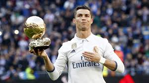

Cristiano Ronaldo grew up in Santo António, Funchal, on the island of Madeira, Portugal. The area is know to have a lot of working class familys it is also know as one of the poorest places in Funchal

Cristiano Ronaldo was inspired to play football by his idols the Brazilian footballers Ronaldo Nazario, and Ronaldinho. He was also introduced to football by his father when he was 9 his father who was working as the equipment manager at a boys' club. He now dedicated his successes to his father's memory, finding solace in the game they both loved he also got into the game because he liked the speed of it

Cristiano Ronaldo has multiple accomplishments some of them being him winning 5 Ballon d'O which he is tied for the most with Lionel Messi. He also has 5 Champions League wins then he also got Portugal a UEFA Euro 2016 win and a UEFA Nations League win and top of that he has 3 Premier League wins with Manchester United and that is not even all the awards he has.
 Home